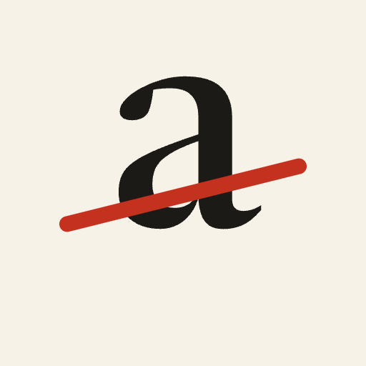

AI De-slopA Claude skill and an audit script that find the tells which make a page look AI-made, remove them by exact rules, and check that nothing broke where they used to be.
Websites for shops that already have a reputation
We design sites for independent businesses that are busy through word of mouth and want the website to say what their customers already say about them.
Book a first callTwo new projects a month. The next opening is in March.
Pick the one that matches where you work. All three install the same skill.
Two commands inside Claude Code. Updates arrive with the plugin.
/plugin marketplace add elmir-mammadli/ai-deslop /plugin install ai-deslop@ai-deslop
Copy the folder once and every project on your machine can use it.
git clone https://github.com/elmir-mammadli/ai-deslop.git /tmp/ai-deslop cp -R /tmp/ai-deslop/skills/ai-deslop ~/.claude/skills/
Download the skill zip from the latest release, then upload it under Settings, Capabilities, Skills.
For a team project, commit skills/ai-deslop to the repository's .claude/skills/ folder instead.
Ask in plain words: "deslop the marketing site", "this page looks AI-made", or share the 20 indicators. Claude then works in a fixed order and does not call the job done until every gate passes.
Each one comes with an exact action and the cases where the element should stay. The numbers follow the widely shared list of AI design slop indicators, so a review can point to them.
| # | Tell | Action | Keep when |
|---|---|---|---|
| 1 | Tags and pills | 999px radius to 3 to 4px, or plain colored text | The tag carries state the reader acts on |
| 2 | Excessive italics | Remove italics and emphasis used for flair | Titles of works, quoted terms, wordmarks |
| 3 | Default AI fonts | Replace Instrument Serif and Sans, Geist, Space Grotesk and mono label fonts as the page voice | Never as the voice |
| 4 | Negative kerning | Remove all negative letter-spacing | Never |
| 5 | Over-detailed UI | Remove gadgets: live dots, fake trackers, cursor lenses, magnetic buttons | The gadget is the product |
| 6 | Overusing dividers | At most one structural rule per list | The rule groups rows |
| 7 | Shades and opacities | Solid tokens, no glows or soft 40px shadows | Photo scrims, one subtle elevation on a real overlay |
| 8 | Bordered containers | Unbox decorative cards, remove left accent stripes | Forms, tickets, tables, status stripes |
| 9 | Over-detailed diagrams | Cut plates, figure labels and legends that do not explain | Every element maps to something real |
| 10 | Verbose, redundant text | One footer disclosure instead of repeated notes | The note adds new information |
| 11 | Code breadcrumbs | Remove // LABEL, /services, [1], EV-01, STATUS: | A real navigation breadcrumb |
| 12 | Section numbering | Remove 01 /, chapters, roman numerals, padded counters | Order is the content, written as 1. not 01 |
| 13 | Eyebrows | Remove, and move any fact they held into the heading or body | Form labels, legends, definition terms, column heads |
| 14 | Dithering and noise | Remove | The texture is the art direction, marked as a keep |
| 15 | ASCII images | Remove | Never by default |
| 16 | Squircles | 12px and larger radii to 4 to 6px | True circles and deliberate shapes |
| 17 | Mono fonts | The text face with tabular figures | Real code |
| 18 | All caps subtitles | Remove uppercase and its letter-spacing | Wordmarks, signage, condensed display brands |
| 19 | Gradient backgrounds | Solid color | Data scales, photo scrims, hairlines |
| 20 | Periods in titles | Drop the final period of headings and title fields | Body text and abbreviations |
audit.py ships inside the skill and also runs on its own with Python 3 and nothing else. It
reads CSS, HTML, JSX and TSX, Vue, Svelte, Astro and data files, skips comments and build output, and
prints every hit with file and line.
Fix-level tells must reach zero. Check-level tells, such as gradients, glows and eyebrows, need a verdict but never fail the run. The exit code is 0 only when no fix-level tells remain, so it works as a CI gate.
Pass --keep-caps for selectors that may keep capitals, --only to focus, and
--json for tooling.
$ python3 skills/ai-deslop/scripts/audit.py examples/before.html == caps [fix]: ALL CAPS text-transform or utility (18) [3] examples/before.html:24 text-transform: uppercase; ... examples/before.html:47 STATUS: ACCEPTING CLIENTS ... total 41 (fix: 29, check: 12) FAIL: fix-level tells remain $ python3 skills/ai-deslop/scripts/audit.py examples/after.html total 0 (fix: 0, check: 0) PASS: no fix-level tells left
Some tells are the right call: rounded ends on a drawn pipe, a print texture that is the whole art direction. Mark the line, or the line above it, with a reason. The audit skips it, and the next person reading the code knows it was a decision.
border-radius: 999px; /* deslop-keep: rounded pipe ends */
{/* deslop-keep: printed paper edge is the art direction */}
<feTurbulence type="fractalNoise" baseFrequency="0.9" />
The skill holds Claude to a written definition of done, so a job is never reported as finished on a subset of pages or before the checks ran.
No. It removes tells and keeps identity. A brand built on condensed capitals keeps them on the headlines that define it.
The audit script does. The judgment calls, rewrites and repairs are what the skill teaches Claude to make.
Anything that ends up as CSS and markup: plain HTML, React and Next.js, Vue, Svelte, Astro, Tailwind or CSS Modules.
From de-slopping 27 production concept websites and the site that hosts them. Each rule exists because something went wrong or right during that work.